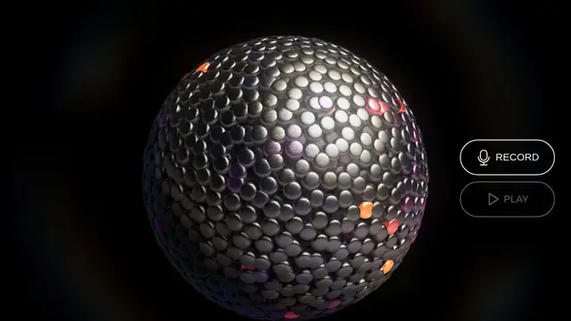
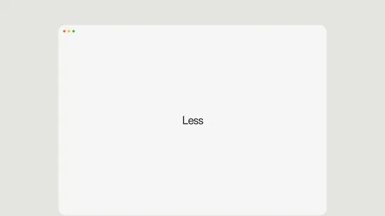
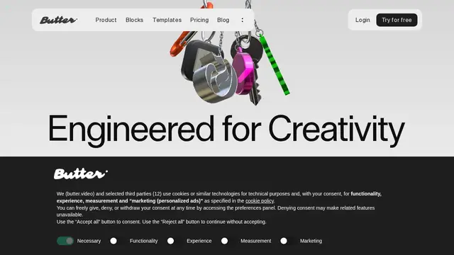
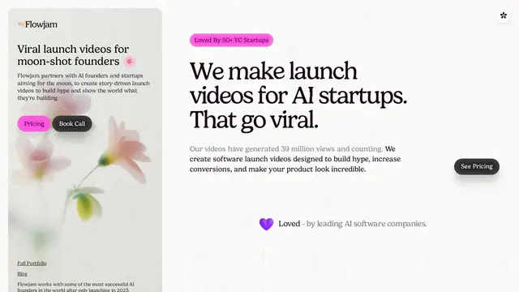
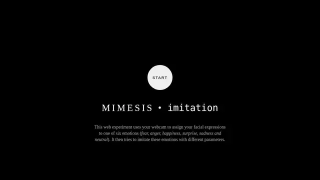
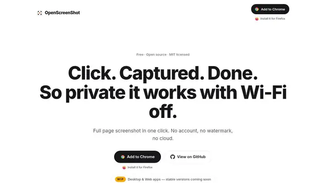
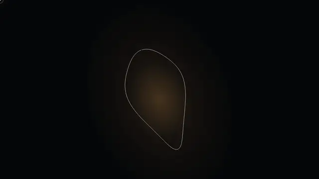
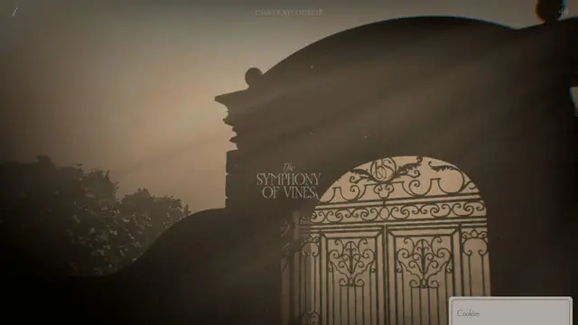

Liquid Geo
液态几何体：twgl WebGL + Tone.js，几何表面像被低频揉皱的金属。

打开网站 ↗它是什么：一颗会“呼吸”的液态金属球：表面上的小珠子像水银一样流动，手指一拨就散开。
好在哪：它把科幻电影里的液态界面做成了能玩的网页，还能录 5 秒声音，回放时整颗球跟着声音鼓动。
怎么做到的：
- 球面上跑了一个简化的流体模拟，每颗珠子都在算“被推、被挤、再流回来”。
- 声音被拆成高低频的能量，越响的频段让球壳鼓得越厉害。
- 最后加一层光晕和泛光，金属质感就出来了。
完整技术拆解
今日拆解 · Liquid Geo
- Live: https://robert.leitl.dev/artifacts/liquid-geo/
- Author: Robert Leitl
- Source: https://github.com/robert-leitl/liquid-geo
- Bundle:
/artifacts/liquid-geo/index-be83070f.js（约 540 KB）+index-6ca6b2e6.css - 资产：
assets/bead.glb、assets/normal.png - 证据目录：本文件夹（
index.html、JS/CSS、package.json、README-upstream.md）
为何选它
8 条里它把《超人：钢铁之躯》里的液态几何界面搬进浏览器：球面上跑 SPH 流体，珠子可被指针拨动，再配合麦克风录 5 秒音频、失真回放，球壳跟着 FFT 鼓动。WebGL2 + twgl + Tone.js + loaders.gl 一条管线讲完，比漂亮落地页更值得拆。
实际在源码里找到的技术栈
this.canvas.getContext("webgl2",{antialias:!1,alpha:!1})；GLSL #version 300/* @license twgl.js 5.2.0；package.json：twgl.js ^5.0.4$h.version="14.7.77" / Tone.js ${"v"}14.7.77；package.json：tone ^14.7.77version:"3.2.11"；加载 bead.glb；package.json：@loaders.gl/gltf ^3.2.3package.json：^3.4.3（生产 bundle 未逐字核对版本字面量）package.json：^7.5.6；bundle 含 .subscribe((()=>…)) 与按钮事件流package.json：^3.1.0；README/?debug=true；生产默认 UI 未挂出 → 推测仅 debugpackage.json scripts/vite ^3.0.0；生产 bundle 无 vite 字符串navigator.mediaDevices.getUserMedia({audio:!0}) → new MediaRecorder(t)package.json 还写明项目 version: 2.0.0。README 写明：SPH fluid on sphere surface、screen-space halo/bloom、Tone.js 录音与失真回放。
核心效果怎么工作（源码 + 标明推测）
1. WebGL2 场景启动（确认）
canvas.getContext("webgl2", { antialias: false, alpha: false })；用 twgl 编译/绑定 program；球体法线贴图走 assets/normal.png。
2. 球面 SPH + 珠子（确认 + 推测）
README：*SPH fluid simulation on sphere surface*（作者另有 gpgpu-2d-sph 仓库）。珠子网格来自 bead.glb（loaders.gl）。推测：粒子位置在 GPU/类 GPGPU 缓冲里更新，再实例化或逐珠绘制到球面；指针位移写入力场。
3. 录音 5 秒 + 失真回放（确认）
类字段：MAX_RECORD_LENGTH = 5、FFT_BUFFER_SIZE = 256；#record-button / #playback-button。getUserMedia → MediaRecorder 收集 audioChunks；回放路径走 Web Audio / Tone（bundle 含 Analyser、distortion、Player 等符号）。
4. 音频驱动球壳（确认 + 推测）
Analyser / FFT 相关符号密集；README：*the sphere responds to the audio signal*。推测：每帧把 frequency bin 能量映射到球面位移或噪声强度。
5. Halo / Bloom（确认）
README 写明 screen-space halo and bloom（参考 John Chapman pseudo lens flare）；bundle 内 halo ×16、bloom ×5、framebuffer ×5。
6. 伪代码（忠实于 README + bundle 结构）
boot:
gl = canvas.getContext("webgl2", { antialias: false, alpha: false })
programs = twgl.createProgramInfo(...) # #version 300 es
bead = await loaders.gl.load(bead.glb)
normalTex = twgl.createTexture(gl, { src: "assets/normal.png" })
audio = new AudioController(recordBtn, playbackBtn)
# MAX_RECORD_LENGTH=5, FFT_BUFFER_SIZE=256
record:
stream = await getUserMedia({ audio: true })
mediaRecorder = new MediaRecorder(stream)
// ≤5s → audioChunks → blob
playback:
Tone / AudioContext graph: Player → distortion → Analyser(FFT 256) → Destination
each frame: bins = analyser.getFrequencyData()
displace sphere / particles by bins # 推测映射细节
SPH step on sphere surface
pointer force on beads
halo + bloom pass
draw如果我来重做（步骤清单）
- Vite +
twgl.js@5+tone@14.7.77+@loaders.gl/gltf，主路径只用 WebGL2。 - 写球面 SPH（或先 CPU 弹簧粒子）+ 法线贴图球壳。
- 加载
bead.glb，指针射线把力打到最近珠子。 - MediaRecorder 录 ≤5s；Tone Player + Distortion + Analyser(fftSize=256) 回放。
- 用 FFT 能量推球面位移；再加 Chapman 式 halo/bloom 后处理。
?debug=true时挂 tweakpane 调粘度、失真、bloom。
零基础也能看懂。先认识这件作品用到的技术，再学一个知识点。
1技术栈小白版
只列拆解里在源码中确认过的技术。点开看它在这件作品里做了什么。
WebGL2
在这件作品里整颗液态金属球、上面的珠子和光晕，都是 WebGL2 每一帧现场画出来的，不是一段视频。
怎么认出来画面会跟着你的手指、声音实时变化；放大不糊；电脑风扇可能会转起来。
twgl.js 5.2.0
在这件作品里作者用它编译着色器、给球壳装上一张「法线贴图」（normal.png，让表面看起来有细小起伏）。
怎么认出来肉眼看不出来。它是幕后工具，不改变画面风格，只让写代码更省事。
Tone.js 14.7.77
在这件作品里回放你录下的那段声音时加上失真效果，并把声音拆成数据交给画面。
怎么认出来网页里有录音 / 播放按钮，播放出来的声音带着效果，画面跟着声音动。
loaders.gl（加载 GLB 模型）
在这件作品里加载珠子的模型 bead.glb，再让很多颗珠子铺在球面上。
怎么认出来场景里有明显是建模软件做出来的精细小物体，而不只是简单的球和方块。
MediaRecorder + getUserMedia（麦克风录音）
在这件作品里点录音键后，浏览器先问你要不要开麦克风，然后最多录 5 秒。
怎么认出来浏览器弹出「是否允许使用麦克风？」的提示。
FFT 频谱分析（Analyser）
在这件作品里回放时每一帧读一次频谱，用来让球壳跟着声音鼓动（具体怎么对应到形状，拆解里标的是「推测」）。
怎么认出来画面随着低音、鼓点一跳一跳，像老式音响上的频谱灯。
球面 SPH 流体
在这件作品里作者的说明里写明：球面上跑着一个 SPH 流体模拟，珠子像液体一样流动，被手指拨开后又慢慢流回来。
怎么认出来东西会「流」、会互相挤、有粘稠感，而不是各飞各的。
Halo / Bloom 光晕
在这件作品里在画面最后再加一层处理，让亮的地方向外渗光，金属感和科幻感一下就出来了。
怎么认出来亮处边缘有一圈柔和的光雾，像隔着一层薄雾看灯。
2今日知识点
实时渲染与着色器：屏幕每秒重画 60 次
你看到的 Liquid Geo 不是一段视频。视频是提前做好的一张张画面，播放时只是按顺序翻页；Liquid Geo 是「现场画」：大约每 1/60 秒，电脑就根据此刻珠子的位置、你的手指、你的声音，把整幅画面从头算一遍、画一遍。这就叫实时渲染。
「渲染」的意思，是把一个 3D 场景（有哪些物体、是什么材质、光从哪来）变成屏幕上的一张平面图片。电影特效也要渲染，但一帧可以慢慢算很久，叫离线渲染；网页和游戏必须在十几毫秒内算完一帧，所以叫「实时」。
谁来算？是 GPU（显卡里专门画图的芯片）。你可以把它想成一座有几千个小工人的工厂：每个工人只负责屏幕上的一小块，大家同时开工，所以特别快。
给这些小工人的「工作说明书」，就叫着色器（shader）。它是一小段程序，只回答一个问题：「这个点应该在哪、是什么颜色？」屏幕上每个像素都会各跑一遍。Liquid Geo 里金属的反光、亮处的光晕，都是着色器算出来的。
一句话记住：实时渲染 = 每秒几十次的「现场重画」；着色器 = 告诉 GPU 每个点怎么画的小程序。
它从哪里来
早期的电脑动画电影，比如 1995 年的《玩具总动员》，用的是离线渲染：很多台电脑一起算，一帧画面也要算很长时间。
1990 年代后期，家用电脑开始装上专门画 3D 的显卡。1999 年，NVIDIA 推出 GeForce 256 时把它称作「GPU」，这个词从此流行开来。
2000 年代初，显卡开始支持「可编程着色器」：程序员和艺术家终于可以自己写着色器，而不只是用厂商固定好的几种效果。
2011 年 WebGL 1.0 发布，网页第一次能直接调用 GPU；2017 年主流浏览器开始支持 WebGL 2（Liquid Geo 用的就是它）；2023 年 Chrome 正式支持新一代的 WebGPU。
经典参考
- Shadertoy全世界的人在这里分享「只用一段着色器」画出来的作品，打开就能看、还能直接改代码。
- 《The Book of Shaders》Patricio Gonzalez Vivo 和 Jen Lowe 写的免费在线入门书，从零开始一步步教着色器。
- 《玩具总动员》（1995）第一部完全由电脑生成画面的长篇动画电影，适合用来对比「离线渲染」和今天网页里的「实时渲染」。
- 打开 Liquid Geo，用手指拨一拨珠子；再随便打开一段 3D 动画视频。问自己：哪一个会因为我的动作而改变？会变的那个就是实时渲染。
- 打开 shadertoy.com，随便点开一个作品，在画面下方找到 FPS（每秒帧数），看看它是不是接近 60。
- 在右边的代码里找一个带小数点的数字（比如 0.5），改成 2.0，再点左下角的播放 / 编译按钮，看画面怎么变——恭喜，你刚刚改了一个着色器。
- 用一句话写下来：「实时渲染就是____；着色器就是____。」
小词典
- 帧（frame）
- 动画里的一张画面。屏幕每刷新一次，就换一帧。
- 帧率（FPS）
- 每秒能画多少帧。60 左右看起来很流畅，低于 30 就会觉得卡。
- 渲染
- 把 3D 场景「拍」成屏幕上一张平面图片的过程。
- GPU
- 显卡里专门负责画图的芯片，特点是能同时做成千上万件小事。
- 着色器（shader）
- 跑在 GPU 上的小程序，决定每个点的位置和颜色。
3知识地图进度







设计雷达 · 每天 8 个值得看的网站、App UI 和网页小游戏